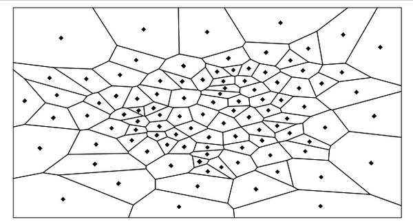
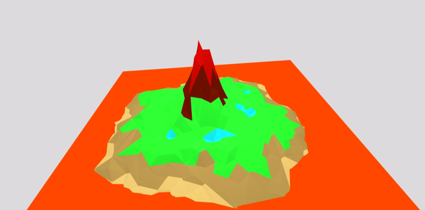

Terrain generation
Map generation
Geometry
The first step is to divide the map into homongeneous areas.
To make the division look not too obvious at the first glance, a good way is to built a Voronoi diagram. If we correctly choose the seeds of the diagram (like in the project with controlled Gaussian draws), the division pattern will not be too visible.
Example of Voronoi Diagram we can create
Geography
Once the geometry of the map has been computed, the next step is to assign to each cell a climate area - referred to the name of Biome in the following.
However, the outcoming map must look coherent. To do so, we define some basic rules for the assignation that should result in a map that looks plausible. The rules used are approximately the followings :
- The cells that are on the edge of the map are necessarily of type Sea, as we are supposed to be on an island.
- The center of the map is very likely to be of type Land , with a decreasing probability as we get closer to the edges.
- The Land neighbouring the Sea gets the subtype Sand.
- A Land can turn into a Mountain or a Lake.
The previous Voronoi diagram can, with these rules, turn into the following map. The legend is :
- Dark blue: Sea
- Yellow: Sand
- Green: Lands
- Light blue: Lake
- Red: Mountain
Biome affectation
Height Map
For the map rendering, we cannot, like in other methods, create the height map using a coherent noise (like the Simplex Noise). Indeed, these approach start by computing a height map using the noise, and THEN using some topological rules, compute the biome map. This quite the opposite of the approach we have here, which is to start from a biome map (procedurally computed or drawn by an artist).
However, we can try to adapt the coherent noise generation algorithm to generate our own noise that will be controlled using the information of the biome map. The understanding of the rest of this part requires the reader to be familiar with the Perlin noise.
During the construction of each octaves, we are going to control a lot of informations. First we are going to control the range of the noise values that are going to be drawn. For example, a draw that happens on a sea will be drawn in a negative range, while a draw that happens on lands will be drawn in a range of small positive values. Then, the interpolation function will not be the same on the whole grid like in the Perlin noise, but will depend on the biomes to take into account their geometry and their extent. For istance, a mountain will have a limited are, and should have sharp edges whereas lands can expand on large areas and will be smooth.
Octave 1:
Octave 1
Octave 2:

Octave 2
...
The outcoming noise is thus coherent with the biome map. The results of this step can ben view in the following section.
Terrain rendering
Basic rendering
This first version of the island simply corresponds to the application of the height map on the Voronoi diagram.
The orange plane represents the sea level.
Basic rendering
Tessellation and Levels of Details
The Tessellation process simply consists in transforming an object into a mesh that is composed of polygons. Re-tessellating a mesh by increasing the number of polygons (triangles here) can improve the rendering quality.
In OpenGL4, the Tessellation Shaders provide a quite 'simple' control on the tessellation level. Thanks to these shaders, we can decide for each basic triangle in how many sub-triangles it will be divided for the rendering.
Below is a short animation showing how increasing the tessellation can affect the quality of the rendering.

Map rendering at different tessellation levels
However, it is quite obvious that the tessellation level is not a constant on the whole scene. For example, take a look at the rabbit below. The ultra-tessellated version on the left is perfect for a close-up, but is horribly expensive and useless if the rabbit is far from the camera. In this last case, we should better use the ultra-low polygon version on the right.

Rabbit mesh with different tessellation levels
The idea is - still in the tessellation shader - to compute for each triangle the Level of Detail it needs to be represented. This value may depend on the geometry of the triangle (equilateral or thin), its size, its distance to the camera etc. The higher this level of detail is, the more the triangle will be tessellated.
We can see in the animation below that the edges of the lake we are zooming on are progressively becoming smoother.

Map rendering with different levels of detail
Texturization
Even if the resolution has been increased by the tessellation process, the borders of the biomes are still defined by the edges of the Voronoi cells.
In the rendering, we have to hide these straight lines. To do so, we simply blend the texture on these edges to get smooth transitions from one biome to another.
This is done through a texture map. This map will store for a set of sampled positions the proportions of each texture at the position.
Example of texture blending
Water rendering
As we are on a island with lakes inside, we also have to render the water planes.
Sea rendering
The sea is simply defined by a textured plane at the alitude 0.
Lake Rendering
Rendering lakes is a bit more tricky as we have to compute connected lake components. This then enable us to compute the altitude of the lake and render a proper water plane.
Lake rendering

Sea rendering
Final rendering
To finish this not-so-bad rendering, we simply have to add a skybox around our island, which can lead to results as the following picture.

Example of map rendering